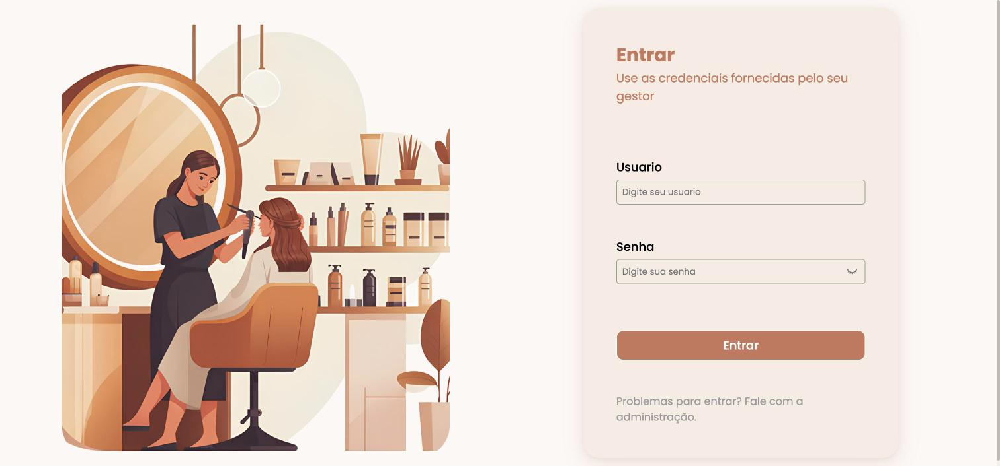
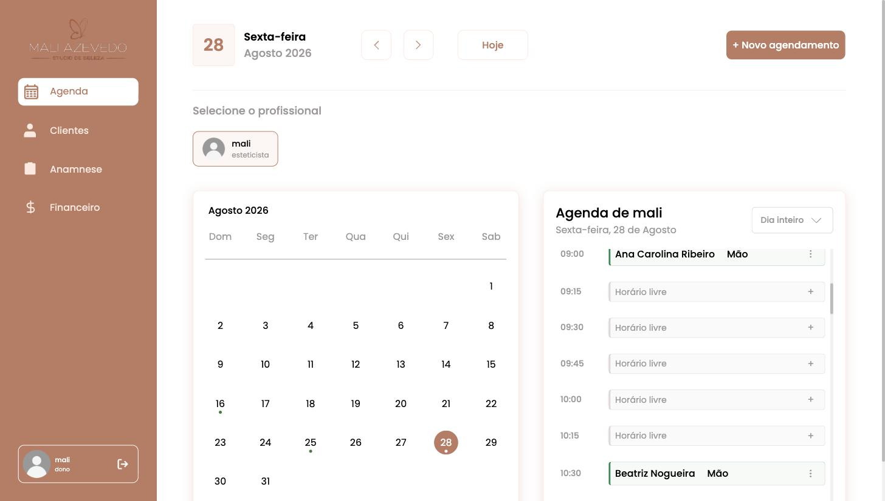
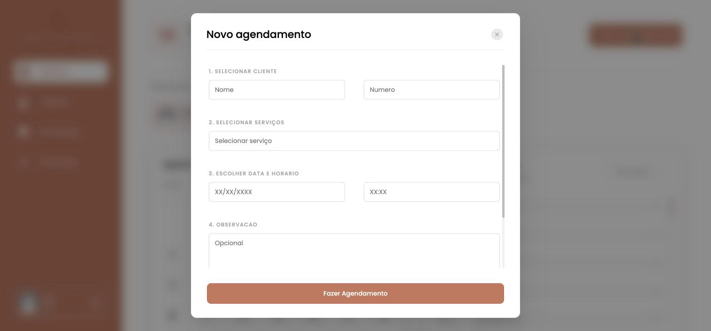
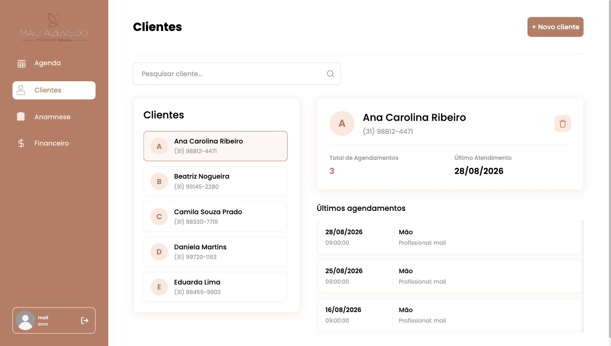
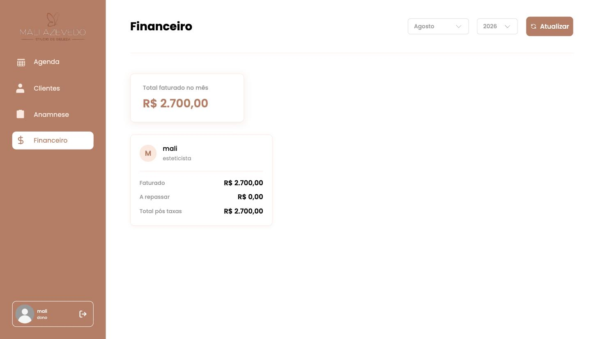
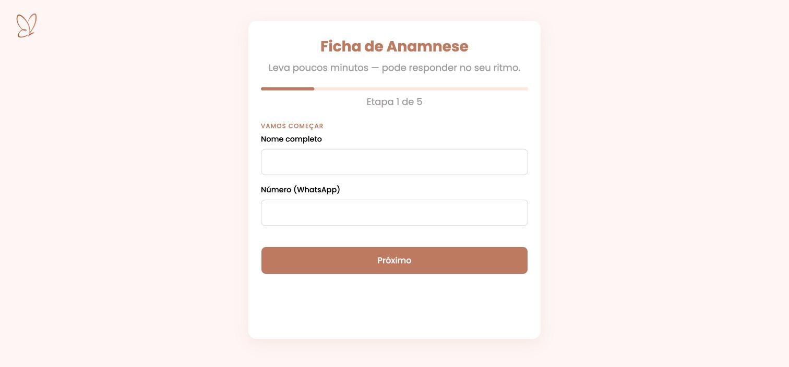
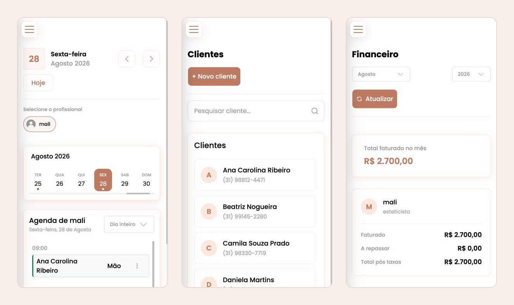

Voltar aos projetos
AgendaPY
Sistema de agendamento para um estúdio de beleza, do banco ao deploy
- O problema
- A agenda do estúdio vivia em caderno e WhatsApp: horário marcado duas vezes, ficha de cliente perdida e o fechamento do mês feito na calculadora. O AgendaPY reúne agenda, clientes, anamnese e financeiro num lugar só.
- Back-end
- Aplicação Flask organizada em camadas — controllers, services, repositories e models — com blueprints por domínio. O SQLAlchemy modela clientes, funcionários, serviços e agendamentos, e as migrações ficam versionadas no Alembic.
- Agenda
- A grade abre em blocos de 15 minutos por profissional, o calendário marca os dias que já têm atendimento e o horário ocupado deixa de ser oferecido — o conflito é barrado antes de virar registro.
- Anamnese digital
- A ficha é um formulário público em cinco etapas que a cliente responde pelo próprio celular antes do atendimento. A resposta cai direto no painel, ligada ao cadastro dela.
- Financeiro
- O faturamento do mês é somado a partir dos atendimentos, quebrado por profissional e por forma de pagamento, com o total após taxas.
- Infraestrutura
- Sobe com Docker Compose (PostgreSQL 16 com healthcheck e volume persistente) e roda em Gunicorn atrás de ProxyFix. Sessão com login, proteção CSRF, rate limit no login e rota de health check.
-

Login -

Agenda do dia -

Novo agendamento -

Clientes e histórico -

Financeiro do mês -

Ficha de anamnese -

Versão mobile